Ajuste de datos experimentales: Método de mínimos cuadrados¶
Un trabajo habitual de laboratorio es la creación de un modelo matemático de cierto comportamiento físico empleando datos experimentales. Por ejemplo, si se toman medidas de la amplitud de las oscilaciones de un péndulo, es posible obtener una función oscilatoria analítica que describa ese movimiento con la frecuencia y amplitud adecuadas para cualquier instante de tiempo.
Aunque existen muchas técnicas para el ajuste de funciones a datos experimentales, el método más común es el de mínimos cuadrados. Supongamos que tenemos una serie de medidas 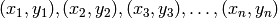, siendo x la variable independiente e y la dependiente. Para un modelo 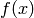 de estos datos, hay un error r para cada medida de 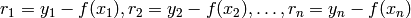. Según el método de mínimos cuadrados, la mejor función de ajuste f(x) es aquella en la que
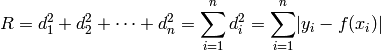
es minimo. La forma canónica de este problema es
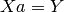
en la que X es una matriz MxN para M medidas experimentales y N grados de libertad y el objetivo es minimizar 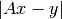. En el caso del ajuste a un polinomio de grado N, el modelo sería de la forma
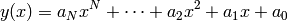
para el que habría que escojer la combinación de parámetros
 que mejor se ajusten a los datos. Así, la matriz A,
llamada matriz de Vandermonde tiene esta forma:
que mejor se ajusten a los datos. Así, la matriz A,
llamada matriz de Vandermonde tiene esta forma:
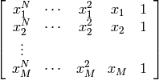
en ella, cada fila corresponde a una medida experimental 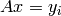.
Ajuste a polinomios con Python¶
La función polyfit() de Numpy permite ajuste de datos experimentales a polinomios de cualquier orden. La sintaxis básica es
parametros = polyfit(x, y, n)
en donde x e y son los datos experimentales y n grado del polinomio a ajustar. El resultado es una lista con los parámetros del polinomio. Si a polyfit se le incluye la opción full=True, además de los parámetros devuelve el residuo y otros datos (ver ayuda de la función polyfit()).
Consideremos el siguiente ajuste a una recta de una serie de datos x e y:
# Importo todas las funciones de numpy si no lo he hecho
from numpy import *
# Datos experimentales
x = array([ 0., 1., 2., 3., 4.])
y = array([ 10.2 , 12.1, 15.5 , 18.3, 20.6 ])
# Ajuste a una recta (polinomio de grado 1)
p = polyfit(x, y, 1)
print(p)
# imprime [ 2.7 9.94]
en este ejemplo polyfit() devuelve la lista de parámetros p de la recta, por lo que el modelo lineal 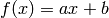 de nuestros datos será:
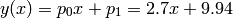
Ahora podemos dibujar los datos experimentales y la recta ajustada:
# Valores de y calculados del ajuste
y_ajuste = p[0]*x + p[1]
p_datos, = plot(x, y, 'b.') # Dibujamos los datos experimentales
p_ajuste, = plot(x, y_ajuste, 'r-') # Dibujamos la recta de ajuste
title('Ajuste lineal por minimos cuadrados')
xlabel('Eje x')
ylabel('Eje y')
legend(('Datos experimentales', 'Ajuste lineal'), loc="upper left")
Como se ve en este ejemplo, la salida por defecto de polyfit() es un array con los parámetros del ajuste. Sin embargo, si se pide una salida detalla con el parámetro full=True (por defecto full=False), el resultado es una tupla con el array de parámetros, el residuo, el rango, los valores singulares y la condición relativa. Nos interesa especialmente el residuo del ajuste, que es la suma cuadrática de todos los resíduos 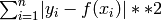. Para el ejemplo anterior tendríamos lo siguiente:
# Ajuste a una recta, con salida completa
resultado = polyfit(x, y, 1, full=True)
print(resultado)
""" Imprime tupla
(array([ 2.7 , 9.94]), # Parámetros del ajuste
array([ 0.472]), # Suma de residuos
2, # Rango de la matriz del sistema
array([ 2.52697826, 0.69955764]), # Valores singulares
1.1102230246251565e-15) # rcond
"""
Si estamos trabajando con polinomios, puede que nos interese usar las funciones polyval() o poly1d() de numpy. Se utilizan para evaluar y generar funciones polinómicas respectivamente, a partir de una lista u array de parámetros. Por ejemplo, si del ejemplo anterior tenemos un array p con los parámetros del ajuste lineal:
# Evaluo el polinomio en x=5.4
print polyval(p, 5.4)
# Imprime 24.520000000000003
# Creo una funcion polinomica de parametros p
mi_recta = poly1d(p)
# Ahora mi_recta es una funcion que puedo evaluar
# Evaluo la fucion en x=5.4
print mi_recta(5.4)
# imprime 24.520000000000003
Como es de esperar, polyfit() sólo puede ajustar polinomios pero a veces nos gustaría ajustar otras funciones. En muchos casos, sin embargo, es posible linealizar la función con un cambio de variable adecuado y ajustar esta última. Por ejemplo la función
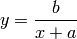
se puede linealizar a 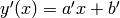 haciendo el cambio
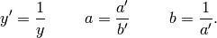
ahora basta con ajustar la recta y recuperar los parámetros a y b de la recta original.
En otros casos en los que no es posible tal cosa, se trataría de hacer ajustes a funciones no polinómicas, aunque esto queda fuera del alcance de este curso. Si tienes interés, consulta la documentación del módulo optimize de scipy. Por ejemplo, puedes importar la función leastsq() del módulo optimize haciendo from scipy.optimize import leastsq) para hacer ajustes por mínimos cuadrados de funciones arbitrarias, sean lineales o no. Puedes consultar el módulo scipy.optimize ver todos los métodos de optimización disponibles.
Ejercicios¶
Representar gráficamente los siguientes datos y hacer un ajuste por mínimos cuadrados a un polinomio de grado tres de los datos representando la curva resultante.
x = 3.1 6.3 9.9 12.6 21.4
y = 50.1 190.2 499.0 720.8 1130.0
Superponer los ajuste que resultarían de ajustes a polinomios de orden 1 y 2.
El fichero de texto medidas_PT_H.txt (archivos Tema 7) posee medidas de presión y temperatura para 10 mol de hidrógeno, que se somete a distintas temperaturas a volumen constante. Este experimento se realiza en tres envases con volúmenes distintos. Suponiendo que el gas se comporta idealmente y por tanto que se verifica que PV=nRT, representar los datos y realizar un ajuste lineal P(T) para cada volumen. ¿Cuánto vale la constante de gases ideales según el experimento?
El fichero de texto medidas_PV_He.txt (archivos Tema 7) posee medidas de presión y volumen para 0.1 mol de helio, que se comprime sistemáticamente a temperatura constante. Este experimento se realiza a tres temperaturas distintas. Suponiendo que el gas se comporta idealmente y por tanto que se verifica que PV=nRT, representar los datos y realizar un ajuste lineal P(V) para cada temperatura. ¿Cuánto vale la constante de gases ideales según el experimento?
Un isótopo radioactivo sigue una ley de desintegración exponencial de la forma 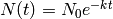, donde
 es la cantidad de material que queda en un tiempo t, 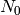 la cantidad original (en t=0) y k es la tasa de decaimiento del isótopo. La semivida de un isótopo es el tiempo que tarda una muestra de ese elemento en disminuir hasta la mitad, es decir 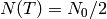.
es la cantidad de material que queda en un tiempo t, 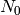 la cantidad original (en t=0) y k es la tasa de decaimiento del isótopo. La semivida de un isótopo es el tiempo que tarda una muestra de ese elemento en disminuir hasta la mitad, es decir 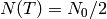.En un laboratorio se mide cada 12 minutos la masa en gramos de cierto elemento radioactivo. Estos datos se encuentran en el fichero medidas_sustancia_radioactiva.txt (archivos Tema 7). Representar gráficamente las medidas con punto y hacer un ajuste por mínimos cuadrados del modelo teórico de desintegración radioactiva para conocer la tasa de decaimiento del isótopo.
Para una muestra que contiene 10g de yodo 131 (semivida de 8 días), se hacen diariamente cinco medidas independientes a lo largo de 60 días. Esas medidas están en el fichero medidas_decaimiento_yodo131b.txt (archivos Tema 7), donde cada fila corresponde a cada una de las 5 medidas realizadas diariamente en gramos de yodo que queda. Representar en un gráfico con puntos las cinco medidas con colores distinto para cada una y ajustar a cada una la curva teórica de decaimiento. Imprimir por pantalla los parámetros de cada uno de los cinco ajustes.
Cualquier metal de longitud 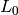 a temperatura inicial 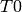, que es sometido posteriomente a una temperatura T sufre una dilatación o contración dada aproximadamente por 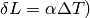 donde 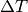 es la diferencia de temperaturas y 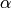 el coeficiente de dilatación característico del metal.
En un laboratorio se mide la dilatación que experimentan cuatro varillas de metal de distinto material de longitud inicial 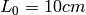 al ir aumentando progresivamente su temperatura en un grado; estos datos se encuentran en el fichero medidas_dilatacion_metales.txt. Representar gráficamente las medidas en una única figura con un color distinto para cada metal y calcular el factor de dilatación a para cada uno ajustando el modelo teórico a los datos.